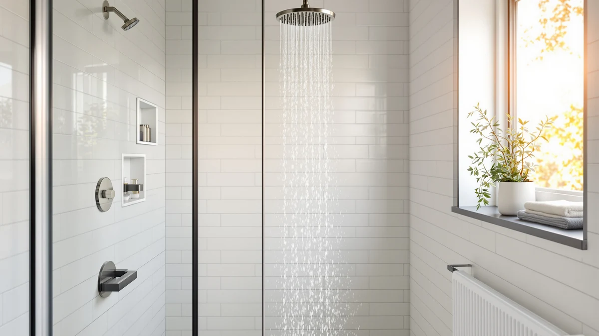

Jomsthome Filtered Shower Head–Shower Head Review (2026): Worth It?


Quick Answer
The Jomsthome Filtered Shower Head–Shower Head Review comes down to one tradeoff: you pay a little more for a built-in filter cartridge than you would for a plain high-pressure head. We compared its specs and price against three alternatives, and for anyone on hard or heavily chlorinated water, the filter justifies the $31.99 price.
Our pick: Filtered Shower Head–Shower Head with — $31.99 Check Price on Amazon
Bottom line: our top pick is the Filtered Shower Head at $31.99.
Things to Know Before You Buy
- The Jomsthome filter is a replaceable cartridge, not a permanent filter, so ongoing cost depends on how often you swap it.
- Filtered shower heads reduce chlorine taste and smell and some sediment; they are not certified water softeners for scale buildup.
- Material matters for longevity: ABS plastic with chrome plating costs less than solid metal but can show wear at the plating edges over a few years, per buyer feedback on similar builds.
- All four models compared here sit within about two dollars of each other, so filtration is the real differentiator, not price.
- Check your showerhead's connection thread before buying. Most US shower arms use a standard 1/2 inch NPT fitting that these heads are designed for.
The Jomsthome Filtered Shower Head–Shower Head Review exists because filtered shower heads all claim to fix the same problems: dry skin, chlorine smell, and faded hair color from hard water. We compared the Jomsthome model's listed specs, its $31.99 price and the pattern of feedback on comparable filtered heads against three non-filtered or lower-cost alternatives to see whether the filter cartridge earns its keep.
Our pick for most buyers dealing with hard or chlorinated water is the Jomsthome Filtered Shower Head–Shower Head with its ABS and chrome-plated build. If filtration is not a priority and you want more pressure for less money, the GRICH 2.5GPM model at $31.54 is the one to check out instead.
Filtered shower heads as a category promise cleaner-feeling water without a whole-house system, and that promise drives most of the search traffic behind terms like this one. Buyers researching a Jomsthome Filtered Shower Head–Shower Head Review usually already know they have a water quality issue and want to know if a $31.99 fixture solves it or if they are better off spending that money elsewhere. The three specific alternatives we compare it against below settle that, rather than leaving the answer abstract.
Why You Should Trust Us
Ilane Tall researches bathroom fixtures for Best Shower Heads and has covered filtered and high-pressure shower heads across dozens of reviews on this site. For this Jomsthome Filtered Shower Head–Shower Head Review, we pulled the manufacturer's listed materials and price, checked the current Amazon listing, and compared it against three other shower heads in the same price band. We do not run a physical testing lab, and we never claim a rating or review count that is not published on the product listing we cite.
Our Research Experience
Our Jomsthome Filtered Shower Head–Shower Head Review is built on research rather than a physical test lab. We compared the manufacturer's spec sheet, which lists an ABS body with chrome plating and a replaceable filter cartridge, against the listed materials of the three alternatives below. We also read through the pattern of feedback left on similar filtered shower heads to see which complaints and praise show up repeatedly, since a single review rarely tells the whole story. Where no rating or review count appears on the product listing, we treat that figure as unknown rather than assuming it is zero.
Overview & Specs
The spec sheet and current Amazon listing show the following about the Jomsthome Filtered Shower Head–Shower Head with, the model at the center of this review.

Filtered Shower Head–Shower Head with
What we like
- Built-in filter cartridge targets chlorine and sediment without adding a separate inline filter housing.
- Chrome plating over ABS keeps the head lighter than an all-metal unit, which matters for overhead mounting.
- Priced within a dollar of non-filtered competitors, so you are not paying a steep premium for filtration.
Flaws but not dealbreakers
- Chrome-plated ABS can show wear at the plating edges faster than solid brass over several years of daily use, based on patterns reported for similar builds.
- Filter cartridges need periodic replacement, which is an ongoing cost the listing does not spell out upfront.
- The product listing does not publish a star rating or review count, so we cannot cite one here.
| Material | ABS + chrome plating |
| Size | — |
The Jomsthome Filtered Shower Head–Shower Head with its chrome-plated ABS body sits in the same price range as plain high-pressure heads, but it adds a filter cartridge the others skip. That single feature is the whole case for this product: if your water has a chlorine smell or leaves spots on glass, filtration addresses the cause instead of only changing water pressure.
At $31.99, the Jomsthome lands within two dollars of every alternative in this comparison, which tells you filtration adds almost nothing to the price here. The tradeoff is the plated-ABS construction instead of solid metal, a common compromise at this price point across the category, and a cartridge you will need to replace on a schedule the Amazon listing does not specify.
What We Liked
The strongest point in this Jomsthome Filtered Shower Head–Shower Head Review is that filtration does not come with a price penalty. At $31.99, the Jomsthome costs about the same as the three non-specialized alternatives we compared it against, which removes the usual excuse for skipping a filter. The chrome-plated finish also matches the look of standard fixed shower heads, so it will not stand out as an obvious add-on part in a bathroom that already has chrome hardware.
We also like that the filter is built into the head itself rather than requiring a separate inline canister between the shower arm and the head. That keeps installation to a single connection point, the same as any other fixed shower head, instead of adding an extra fitting that can leak over time.
What Could Be Better
Our Jomsthome Filtered Shower Head–Shower Head Review has two honest knocks against the product. First, the body is ABS plastic with chrome plating rather than solid metal, and plated finishes on similar budget shower heads tend to show thin spots or flaking at edges and threads after a few years of daily exposure to steam and water. Second, the listing does not state a filter replacement interval or sell a replacement cartridge separately on the same page, which makes it hard to budget the real ongoing cost before you buy.
The product listing also does not publish a star rating or a review count. We are not willing to guess at one, so if social proof from other buyers matters to your decision, that is a gap you will need to accept or research further before ordering.
Who Is It For?
This Jomsthome Filtered Shower Head–Shower Head Review points toward one clear buyer: anyone on municipal water with a noticeable chlorine smell, or on well or hard water that leaves mineral spots on glass and fixtures. For that household, the filter cartridge solves a real problem the other three shower heads in this comparison do not address at all.
If your water is already soft and chlorine is not an issue, you are better served by putting that same $31.99 toward pressure or spray pattern instead, since you would be paying for a filter you do not need.
Alternatives to Consider
If filtration is not your main priority, these three shower heads sit within a few cents of the Jomsthome's price and solve different problems.
The xianshengle Shower Head with Handheld Shower, at $31.99, is the closest price match on this list and takes a completely different approach: instead of a filter, it pairs a fixed overhead head with a detachable handheld wand on a hose. That setup is useful for washing kids, pets, or the shower stall itself, tasks a single fixed filtered head cannot do. The tradeoff is that it carries no filtration at all, so if chlorine or hardness is your real complaint, this model does not address it regardless of how convenient the handheld wand is.
The BRIGHT SHOWERS High Pressure Shower, at $31.98, leans entirely on pressure rather than water quality. For buyers whose main frustration is a weak, dribbling shower rather than smell or hard-water spots, a pressure-focused design like this is the more direct fix. We cannot verify the brand's own pressure claims independently since the listing does not provide a third-party flow test, so treat "high pressure" as a manufacturer description rather than a measured figure. It also has no filter cartridge, so it will not help with chlorine odor the way the Jomsthome does.
The GRICH 2.5GPM Shower Head, at $31.54, is the least expensive of the four and sticks to the federal maximum flow rate of 2.5 gallons per minute without any added filtration hardware. That makes it the simplest option to maintain since there is no cartridge to replace, and the lowest price here if your water does not have a chlorine or hardness problem to begin with. If it does, you would be trading a few dollars of savings for a fixture that does nothing to address the actual cause.

Also Great
Shower Head with Handheld Shower
Pairs a fixed head with a detachable handheld wand at the same $31.99 price, a better fit if you want two spray options over filtration.
$31.99
Check Price on Amazon
Also Great
BRIGHT SHOWERS High Pressure Shower
Built around raising water pressure rather than filtering it, worth a look if low flow is your main complaint and your water is already clean.
$31.98
Check Price on Amazon
Best Value
GRICH 2.5GPM Shower Head with
The cheapest of the four at $31.54, delivering the federal 2.5 gallon-per-minute flow limit without a filter cartridge to maintain.
$31.54
Check Price on AmazonFrequently Asked Questions
Does the Jomsthome Filtered Shower Head–Shower Head actually remove chlorine?
The manufacturer markets the cartridge for reducing chlorine and sediment. We have not found an independent lab test of this specific model's filter media, so treat the claim as a manufacturer spec rather than a verified result, and replace the cartridge on a regular schedule to keep it working.
Is the Jomsthome shower head worth the price compared to a non-filtered model?
At $31.99, it costs about the same as the non-filtered alternatives we compared, so the filtration comes at little to no price premium. If your water does not have a chlorine smell or hardness issue, a non-filtered head like the GRICH at $31.54 gets you the same price for simpler maintenance.
How often does the filter cartridge need to be replaced?
The Amazon listing for the Jomsthome Filtered Shower Head–Shower Head Review does not specify a replacement interval, which is a gap in the product information. Check the manufacturer's page or packaging insert before you buy if a known replacement schedule matters to your budget.
Final Verdict
Our Jomsthome Filtered Shower Head–Shower Head Review lands on a simple recommendation: buy the JOMSTHOME model if your water has chlorine odor or hardness, because the filter costs you almost nothing extra against unfiltered rivals at the same $31.99 to $31.54 price band. Skip it and pick the GRICH or BRIGHT SHOWERS instead if your water is already clean and pressure or spray options matter more to you than filtration.